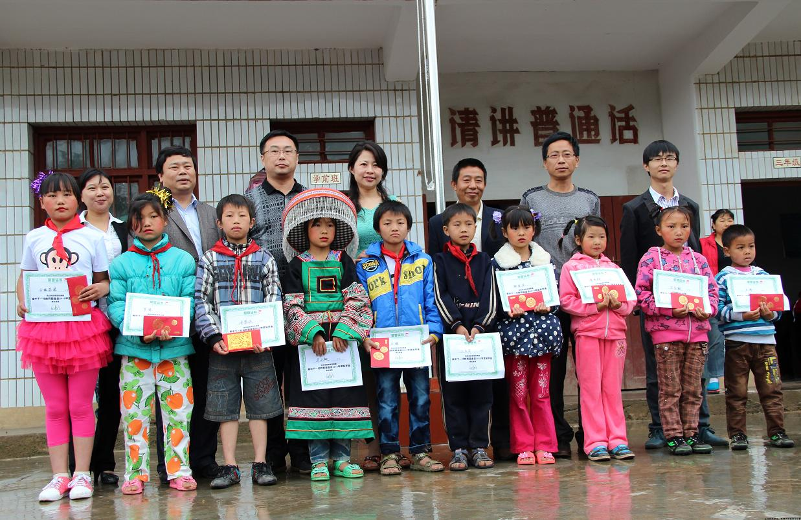

柏山小学纪行----贵州发放奖学金归来
王昕
2013年6月19日
基金会的负责人你们好！
刚刚从国内回来， 现将我此行的目的之一，美中教育基金会奖学金发放活动给大家做个汇报。
我于5月29日在贵州省桐梓县松坎镇柏山乡将基金会批准的￥20,000人民币发放给柏山小学的10名同学（每人￥2,000元）。学校和当地负责人都非常重视此次奖学金发放活动，原计划结合学校六一节的庆祝活动举行一个隆重的颁奖仪式，可是由于当日大雨瓢泼，学校的设施也比较简陋，没有室内的礼堂，最后只能在一间教室中举行了一个简单而富有诚意的发放仪式。桐梓县电视台记者也对仪式进行了全程跟踪采访，并于儿童节这天（6/1）在当地电视台，对此次活动进行了滚动播出。
感谢基金会给我这个荣幸让我代表基金会把爱心送到偏远的柏山，也请给我一个机会让我把来自山区的感激和敬意转达给你们！ 山里人的质朴和单纯，山里人的贫穷和艰难是我这个亲临其境之后的人无法言诉的。
柏山小学在海拔一千九百多米的山上， 从县城坐车到镇上再从镇上到有着一千五百多米海拔差异的山上， 石头土路， 山高路陡，连日的雨水使山路的很多路段都淹没在泥水中，我们的车都是涉水前进。8公里的路程，车子颠簸了1个多小时。也切身体会到山区孩子每天步行，走山路上学的艰辛。风景倒是绝好！只是山上山下的温差让我不得不借了同行记者的外套。
冷恩达是此次获得奖学金的同学之一，奖学金发放仪式结束后，在我们的要求下，我们造访了他的家。一家十来口就住在两间土坯房内，恩达排行老五，下面还有三个弟弟妹妹，一间土坯房是他们全家的居室，发黑的被子和床单；一盏掉在破旧屋顶上的昏黄的灯；一个取暖用的烧火炉，炉台就是饭桌，也是孩子的书桌。 另一间房既是厨房，也是鸡窝和猪圈。做饭的锅和熬煮猪食的大灶并排放着，无法想像会是怎样的食物端上外间的饭桌。。。。
生活在高山上的村民，在家务农的收成只能勉强果腹， 真是应了那句话----越穷越生， 越生越穷。离开时老公代表我们一家留了些微薄的心意给恩达的家人， 真希望他的父母明白这不是鼓励他们生，只是不忍心看到孩子们受苦。
附件里是学校负责人的发言稿，小学生代表令狐昌琴的感谢信， 仪式主持稿 ，和我的发言稿， 以及美金兑换收据 和奖学金领取签收表。
另外我还有此次发放仪式县里的电视新闻报道视频片段和大量照片， 但是文件的尺寸太大， 我没有办法Email， 我会把它们整理出来当面交给基金会的负责人。
再次感谢大家！
王昕
|  |

|